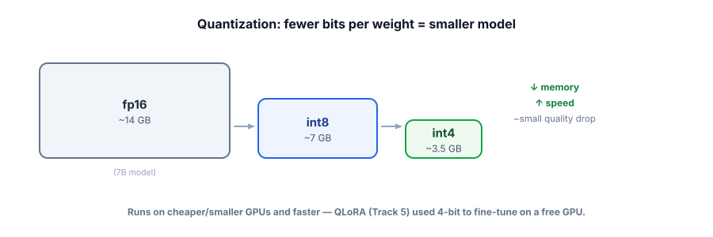

Quantization
A model is billions of numbers called weights.
Normally each weight takes 16 bits of memory.
Quantization stores each weight with fewer bits, such as 8 or 4, by rounding it.
The model gets much smaller and faster, and usually loses only a little quality.
That is how a 7-billion-weight model runs on a laptop in this course.
Imagine writing down everyone's height in a class. You could write 152.3847 cm, or just 152 cm. The short version takes much less paper and is almost always good enough. Quantization does that to a model's billions of numbers: it rounds them to fewer digits so the model fits in less memory.
| In the picture | In the real system |
|---|---|
| Writing 152.3847 cm | A 16-bit weight (bf16 or fp16) |
| Writing just 152 cm | An 8-bit or 4-bit weight: rounded to fewer levels |
| Less paper for the whole class list | Less memory: 15.2 GB at bf16 down to 4.7 GB for the Q4 file of Qwen2.5-7B |
| Measuring the important heights more carefully | Smarter methods keep scales and sensitive weights at higher precision |
Where the picture breaks. Rounding a height loses nothing you care about, but a few of a model's numbers matter a lot, so good quantization methods round those more carefully than the rest.
Going deeper
Quantization shrinks a model by storing its weights with fewer bits — making it smaller, faster, and runnable on cheaper hardware, with usually only a small quality cost. It’s why you can run capable models on a laptop (the free local stack of this whole course), and a key lever when you self-host.
Smaller numbers, smaller model
A model’s weights are numbers, normally stored at 16 bits each (fp16). Quantization stores them with fewer bits — 8 (int8) or even 4 (int4) — so the model takes proportionally less memory and runs faster, because there’s less data to move and compute. The trade-off is a small loss of precision in each weight, which usually causes only a minor quality drop. You already saw this in Track 5: QLoRA quantizes the base model to 4-bit so a big model fits on a free GPU.

Quantization reduces the number of bits used to store each model weight (e.g., 16-bit → 8-bit → 4-bit). Lower precision means less memory and faster compute, at the cost of some accuracy. The trade-off is usually favorable: 8-bit is often nearly lossless, and 4-bit is a popular sweet spot for running large models on modest hardware. Local runtimes like Ollama serve quantized models (often in the GGUF format) by default — which is how this course runs models for free.
You’ve been using quantization all along — Ollama ships quantized models so they run on everyday hardware.
# Ollama serves quantized models by default — this is why it fits on a laptop:
$ ollama pull qwen2.5:7b # downloads a ~4-bit quantized build (~4-5 GB, not ~16 GB)
$ ollama run qwen2.5:7b # runs fast on CPU/modest GPU thanks to quantization
# You can choose a quant level when available (higher q = more bits = better quality, more memory):
$ ollama pull qwen2.5:7b-instruct-q4_K_M # 4-bit (small, fast)
$ ollama pull qwen2.5:7b-instruct-q8_0 # 8-bit (bigger, closer to full quality)The lesson: quantization isn’t exotic — it’s the default that makes free local models practical. When self-hosting, choosing a quant level is one of your main cost/quality dials.
Facts: Qwen2.5-7B-Instruct has 7.61B parameters, 28 layers, 4 key-value heads and hidden size 3,584 with 28 attention heads, so head dimension is 128 (model card and config). Locally, ollama show qwen2.5:7b reports quantization Q4_K_M and ollama list shows 4.7 GB. The 24 GB GPU and the traffic are our assumptions.
- Weights at each precision. bf16: 7.61B x 2 bytes = 15.2 GB. int8: 7.6 GB. The Q4_K_M file at 4.7 GB works out to 4.7e9 x 8 / 7.61e9 = about 4.9 bits per weight, not exactly 4, because k-quants keep scales and some tensors at higher precision.
- KV cache per token. 2 (K and V) x 28 layers x 4 KV heads x 128 dims x 2 bytes (fp16) = 57,344 bytes, about 56 KB a token.
- KV for real traffic. 16 concurrent conversations at 8,000 tokens each = 128,000 tokens x 56 KB = about 7.3 GB.
- Does it fit in 24 GB? bf16: 15.2 + 7.3 = 22.5 GB, leaving about 1.5 GB for activations and runtime overhead, which is too tight. Q4_K_M: 4.7 + 7.3 = 12 GB, leaving room to double concurrency.
- So quantization buys concurrency, not just fit. Every GB saved on weights is about 17,000 more tokens of KV cache, which means more users per GPU and a lower cost per request.
- The quality check. Before shipping Q4, run your golden set on bf16 (or the provider's full model) and on Q4. If the per-case regression list is short and not concentrated in one task type, ship it; if arithmetic or extraction cases cluster in the failures, try Q8 or AWQ/GPTQ builds and re-measure.
Trade precision for memory
Step down the precision and watch the model shrink. Somewhere on this slider is the point where a 7B model fits on hardware you already own.
- Quantization stores weights with fewer bits (16 → 8 → 4), shrinking the model proportionally.
- Result: less memory, faster, cheaper hardware — with a usually-small quality drop.
- 8-bit is often near-lossless; 4-bit is the popular sweet spot for big models on modest hardware.
- It’s the default that makes free local models (Ollama/GGUF) practical, and underpins QLoRA (Track 5).
- When self-hosting, the quant level is a key cost/quality dial — measure the quality impact for your task.
You want to run a capable open model on a single modest GPU that can’t hold the full-precision version. What’s the standard move?
What does quantization trade, and why is it worth it?
Ollama lists qwen2.5:7b (7.61B parameters, Q4_K_M) at 4.7 GB rather than the 3.8 GB that exactly 4 bits a weight would give. Why?
1. Roughly how much memory does a 13B-parameter model need at fp16 vs int4, and why?
2. When would you not want to go down to 4-bit?
3. Connect quantization to QLoRA from Track 5 — what role did it play there?
▸ Show solutions & reasoning
1. At fp16 (2 bytes/weight), 13B params ≈ 26 GB just for weights; at int4 (~0.5 byte/weight) ≈ 6–7 GB. (Real usage adds some overhead for activations/KV cache.) The footprint scales with bits-per-weight, so dropping from 16 to 4 bits is roughly a 4× reduction — the difference between needing a big GPU and fitting on a modest one.
2. When the quality drop matters for your task — e.g., high-stakes accuracy, complex reasoning, or a smaller model where 4-bit degradation is more noticeable. Aggressive quantization (4-bit and below) compounds with a model that’s already near its limits. The discipline: measure your task’s quality at each quant level (Track 6) and pick the lowest bits that still clear your bar — sometimes that’s 8-bit, sometimes 4-bit is fine.
3. QLoRA = Quantized + LoRA: it loads the frozen base model in 4-bit (quantization) to slash memory, then trains a small LoRA adapter on top. The quantization is precisely what let you fine-tune a large model on a single free GPU — same technique as here (shrink the model to fit cheap hardware), applied to training rather than serving.
Quantization matters most when you control the serving — i.e., you self-host an open model rather than calling a hosted API. (With a pay-per-token API, the provider handles the hardware; your levers are routing, caching, and token budgeting, not quant levels.) Self-hosting becomes attractive at scale (no per-token fees, just your hardware), for privacy (data never leaves — Track 7), or for customization (your own fine-tunes). In that world, quantization is a primary dial: it determines what hardware you need and how many requests one GPU can serve, directly shaping your cost per request.
The engineering nuance is that quantization quality isn’t uniform — it depends on the method (modern schemes like GPTQ, AWQ, and the GGUF k-quants preserve quality better than naive rounding), the model (bigger models tolerate quantization better; small ones degrade more), and the task (simple tasks barely notice 4-bit; subtle reasoning may).
So you don’t pick a quant level by reputation — you serve a couple of candidates and run your eval set (Track 6) to see the real quality-vs-memory trade-off for your workload, then choose the smallest that clears your bar. Combined with the rest of this track, the pattern for self-hosters is: quantize to fit cheap hardware, batch to keep it busy (next lesson), cache and route to avoid work, and budget tokens to keep every call lean. That stack is how teams run capable models affordably — and it’s the same stack that lets you run them for free on a laptop.
labs/01_generate_and_sample.pyFree and offline once set up: Ollama with qwen2.5:7b, plus the packages in labs/README.md. From the course folder:
python labs/01_generate_and_sample.pyWhat to look for: No lab compares quant levels, because that would need a second multi-GB download. What you can see: run ollama show qwen2.5:7b (it prints quantization Q4_K_M) and the lab's tokens/sec for that 4.7 GB build on your machine. If you have disk to spare, pull a q8_0 tag of a small model, rerun, and compare tokens/sec and answers on the same seeds.
Small samples: these labs use 5 to 20 cases so they run in minutes on a laptop. Where they report a rate, they print n and a 95% Wilson interval. Read them as a demonstration of the mechanism, not as a measured rate for your system; for that you need hundreds of cases and several seeds.
▸ Recorded output (our run, 2026-11-03, qwen2.5:7b on a laptop GPU)
2) Same prompt, temperature 1.0, three different seeds
seed=1: Bengaluru in July typically experiences warm to hot temperatures with occasional thunderstorms.
seed=2: Bengaluru in July typically experiences hot and humid weather with occasional thunderstorms.
seed=3: Bengaluru in July typically experiences hot and dry weather with temperatures often soaring above 30°C.
distinct outputs at T=1.0: 3 (sampling -> usually 2-3)
3) Same seed twice at T=1.0 -> reproducible on the same machine
identical: True
4) Tokens are what you pay for: prompt vs output token counts
short prompt: prompt_tokens= 36 output_tokens= 2 prefill_s= 0.52 answer='Paris'
long prompt : prompt_tokens= 639 output_tokens= 2 prefill_s= 0.22 answer='Paris'
Look: the long prompt costs many more input tokens and more prefill time for the same answer.
5) Streaming: time-to-first-token (TTFT) vs total time
TTFT=0.36s total=2.54s chunks=16 decode_tokens_per_s=7.3
Look: streaming does not make generation faster; it shows the first words sooner.Your numbers will differ a little run to run. Full log: labs/outputs. Source: labs/01_generate_and_sample.py.
Warm-up. Estimate weight memory for a 32B-parameter model at bf16, int8 and 4-bit (assume 4.9 bits a weight for the 4-bit format).
▸ Solution
bf16: 32e9 x 2 = 64 GB. int8: 32 GB. 4-bit at 4.9 bits: 32e9 x 4.9 / 8 = 19.6 GB. So a 32B model goes from needing an 80 GB-class GPU to fitting, with modest KV room, on a 24 GB card.
Transfer. Using the Qwen2.5-7B KV figure of about 56 KB a token, how many concurrent 4,000-token conversations fit in the memory left on a 24 GB GPU after the 4.7 GB Q4 weights, keeping 3 GB for runtime overhead?
▸ Solution
Free memory: 24 - 4.7 - 3 = 16.3 GB. Per conversation: 4,000 x 57,344 bytes = about 229 MB. 16.3 GB / 0.229 GB = about 71 conversations. Serving engines like vLLM allocate the KV cache in pages so they can use this space efficiently; in Ollama, RAM scales with OLLAMA_NUM_PARALLEL x context length, so you set those two knobs within this budget.
Stretch. Your team proposes 3-bit quantization of a 7B model to double concurrency. Lay out how you would decide, and name the failure pattern you would watch for.
▸ Solution
Build three candidates (bf16 reference, Q4, Q3) and run the full golden set plus a task-specific stress set (long-context recall, arithmetic, JSON extraction) on each with fixed seeds. Compare per-case, not just averages, and compute the cost per request at the concurrency each fits. Watch for failures that cluster: low-bit models often degrade first on precise tasks such as numbers, code and long instructions while chat quality looks fine. Decide with a rule set in advance, e.g. 'no more than 2 points average drop and no task family drops more than 5 points'. If Q3 fails, consider a smaller model at Q4 or KV-cache quantization instead.
Junior What is quantization and what does it trade off?
▸ Model answer
Quantization stores a model's weights with fewer bits, for example 16-bit down to 8 or 4. Memory drops roughly in proportion, so a 7B model goes from about 15 GB in bf16 to under 5 GB at 4-bit. Less memory also means faster decoding because generation is limited by how fast weights move from memory. The cost is some lost precision, which usually means a small quality drop that grows at lower bit-widths and on smaller models. You measure that drop on your own eval set before choosing a level.
Mid Compare GPTQ, AWQ and GGUF k-quants at a high level. When would you pick each?
▸ Model answer
All three are post-training weight quantization. GPTQ quantizes layer by layer using second-order information from calibration data to minimise error. AWQ protects the small fraction of weights that matter most, found from activation statistics, by scaling them before quantizing. GGUF k-quants are the llama.cpp/Ollama family, with block-wise scales and mixed precision, built for CPU and consumer-GPU inference. I pick GGUF for local and edge serving, and GPTQ or AWQ builds for GPU serving engines like vLLM, choosing between them by running my eval set, since the winner depends on the model and task.
Senior You run a self-hosted 70B model at bf16 on multiple GPUs. Make the case for or against moving to 4-bit.
▸ Model answer
For: weights drop about 4x, so the model may fit on fewer GPUs, which cuts cost and removes cross-GPU communication; freed memory goes to KV cache, so concurrency and throughput rise. Against: quality risk, especially on precise tasks; some kernels at low precision can be slower at large batch sizes than bf16 on high-end GPUs; and the team must operate a second artefact. I would benchmark both on our traffic: quality per task family, tokens/s at our concurrency, and cost per 1,000 requests. If 4-bit holds quality within the threshold we agree on beforehand and lowers cost per request, ship it behind a canary.
Quantization makes one model instance cheaper. The next technique squeezes maximum work out of that instance by serving many requests at once. Next: batching & throughput.
In one line: Quantization rounds a model's numbers so it fits in less memory, at a small cost in quality.